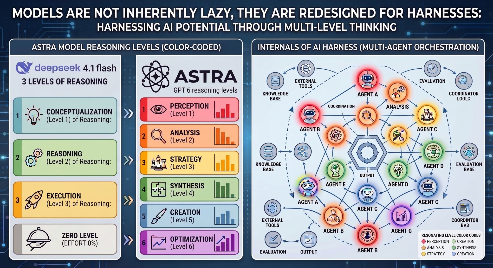

Join cheaperuh party
Join cheaperuh (čipera) PARTY
In Czech, the word čipera means a lively, brisk, nimble, or energetic person (often used affectionately for an active child). In this project it is used in a sarcastic way - AI is many times too overcommitted to do the task ...
Can AI really adjust its intelligence to real tasks?
Cursor Projects Beta Launched on September 10, 2026
Projects shifts Cursor from a file-level editor into an autonomous agent manager:
- The Coordinator Agent: When you start a Project and describe a massive goal (like a full app migration or building an entire feature), a top-level Coordinator Agent takes over. The coordinator doesn't actually write code; instead, it acts as a project manager - planning the architecture, mapping out the roadmap, and spawning thousands of subagents to execute individual pieces.
- Under the Hood: Recursive Swarm Architecture
So question is? Can AI really guess level of inteligence needed per tats so it will not burd all you credit and pacience with swarm of 1000 agents?

AI Tinkerers Prague Hackathon 12.9.2026 - part of the global Agents, Everywhere: Bots, Channels, & More - Global Hackathon, see link for details